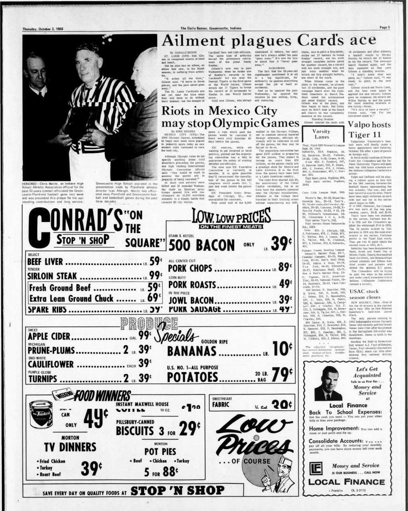

HN-671 · October 3, 1968 · Civil Rights & Social Change > Civil Rights Movements & Protests > Protest crackdowns
Tlatelolco October 1968 news headlines differ over military response, snipers, responsibility and casualties.
Source: The Daily Banner, p. 5 — original page.
Report: “Riots in Mexico City may stop Olympic Games†appeared a day after lethal confrontation between Mexican security forces and student demonstrators at Tlatelolco, shortly before the Olympics opened.
Assessment: The contemporaneous headline frames a state-violence crisis as an Olympic scheduling risk. Death totals and responsibility were heavily disputed and obscured. This selected newspaper page does not establish an accurate victim count or investigative finding; original Mexican records and survivors' testimony require separate study.
Class: Competing accounts (P)
Recorded difference/concern: Tlatelolco October 1968 news headlines differ over military response, snipers, responsibility and casualties.
Assessment: 11 newspaper headline leads all B; full article-level attribution and toll extraction remain unperformed.
Source links: https://expansion.mx/nacional/2015/10/01/tlatelolco-segun-los-periodicos-del-3-de-octubre-de-1968 https://course-exhibits.library.dartmouth.edu/s/modernmexico/item/2279 https://www.theguardian.com/cities/from-the-archive-blog/2015/nov/12/guardian-mexico-tlatelolco-massacre-1968-john-rodda
Authentic images retrieved from Hoosier State Chronicles (Indiana State Library). Article crops are located using the archive's own OCR word coordinates and rendered at native crop resolution; article clips are assembled from the archive's own article-block images; page images marked "archive tiles" are stitched from the archive's own tiled page service at its 256-px tile cap; page images marked "issue PDF" are single pages rasterised from the archive's own issue PDF, with the page chosen by matching the headline against the PDF's text layer; page scans are reduced-size access renditions. No images were generated, mocked, or retouched.

Status: Archive images acquired
Authentic archive-owned image renditions were retrieved for this record and are displayed above. The source-acquisition manifest preserves the original pre-acquisition feasibility assessment.
URL (preserved verbatim): https://newspapers.library.in.gov/?a=d&d=TDB19681003-01.1.5
Saved research report: Historical_Newspaper_Event_Research_653-677_2026-10-23.md
Evidence note: A newspaper report means a historical publication made a claim; it does not establish that claim as fact. Contemporary reporting is separated from later scholarly context and our own assessment.